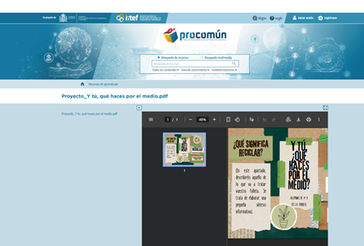
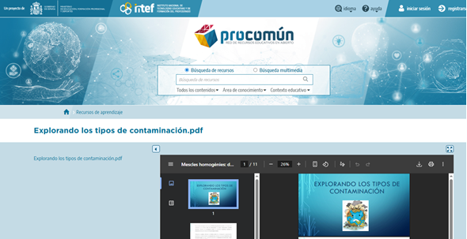

Modelos de Evaluación de Recursos Educativos Digitales
Explora el proceso de análisis, rediseño y Aplicación de Modelos de evaluación que fortalecen la calidad del aprendizaje en entornos digitales.
Este espacio organiza la información principal del proyecto y sirve como punto de partida para cada sección.
Integrantes
- ANGIE GABRIELA GARCIA RODRIGUEZ
- MICHELL DAYANA HERNANDEZ VILLARREAL
Modelos de evaluación
Selecciona la sección para revisar modelos o los recursos educativos digitales.
LORI
Título: LORI
Descripción: Modelo de evaluación de Recursos Educativos Digitales desarrollado en 2002 por académicos de la Universidad Simon Fraser, orientado a valorar la calidad pedagógica y técnica de los objetos de aprendizaje. Permite analizar los RED desde una perspectiva integral, considerando su pertinencia educativa y funcionalidad.
Criterios de evaluación
- Calidad del contenido: La pertinencia, exactitud, claridad y actualización del contenido del recurso educativo digital.
- Alineación con objetivos de aprendizaje: La coherencia entre el recurso, los objetivos de aprendizaje y los contenidos curriculares.
- Retroalimentación: La presencia y calidad de la retroalimentación que ofrece el recurso al estudiante.
- Motivación: La capacidad del recurso para despertar interés, participación y compromiso del estudiante.
- Diseño y usabilidad: La facilidad de uso, organización visual y navegación del recurso.
- Usabilidad: La facilidad con la que el usuario interactúa con el recurso, navega y comprende su funcionamiento.
- Accesibilidad: El grado en que el recurso permite el acceso a estudiantes con diversas necesidades y contextos tecnológicos.
- Reusabilidad: La posibilidad de reutilizar el recurso en distintos contextos educativos.
- Cumplimiento de estándares: El cumplimiento de criterios técnicos, pedagógicos y legales.
Escala de evaluación: Escala tipo Likert ordinal, generalmente de cinco niveles (1 a 5), utilizada para valorar cada criterio de calidad del recurso educativo digital, que permite valorar cada criterio según el nivel de calidad percibido, desde muy bajo hasta excelente. La escala apoya el juicio cualitativo del evaluador sin constituir un análisis estadístico.
Metodología: Metodología cualitativa, descriptiva y documental, basada en la revisión sistemática del recurso educativo digital a partir de criterios previamente definidos. El análisis se realiza mediante observación directa del recurso, considerando dimensiones pedagógicas, técnicas y comunicativas.
Instrumento de evaluación: Rúbrica o lista de verificación estructurada por criterios que se valora mediante una escala tipo Likert y se acompaña de descriptores que orientan el juicio del evaluador.
CODA
Título: CODA
Descripción: Modelo de evaluación de la calidad de Recursos Educativos Digitales que integra dimensiones pedagógicas, técnicas, comunicativas y normativas, con el fin de analizar de manera integral la adecuación del recurso para su uso en contextos educativos.
Criterios de evaluación
Se estructuran en dimensiones que consideran contenidos, diseño pedagógico, aspectos técnicos, comunicación, usabilidad, accesibilidad y cumplimiento normativo, permitiendo un análisis detallado del recurso en función de su calidad global.
Escala de evaluación: Utiliza escalas de valoración cualitativas y ordinales, que pueden adaptarse según el contexto de evaluación, permitiendo clasificar el cumplimiento de los criterios en niveles progresivos de calidad.
Metodología: Cualitativa y analítica, orientada a la revisión estructurada del recurso educativo digital mediante el análisis de dimensiones y subcriterios, con énfasis en la coherencia entre el recurso, el contexto educativo y los estándares de calidad.
Instrumento de evaluación: Matriz o instrumento de evaluación estructurado en dimensiones, criterios y subcriterios, que permite registrar de forma organizada el nivel de cumplimiento del recurso educativo digital.
Tipo de instrumento: Matriz de evaluación cualitativa estructurada en dimensiones, criterios y subcriterios.
Propósito del instrumento: Analizar de manera integral la calidad de un Recurso Educativo Digital (RED) a partir de dimensiones pedagógicas, técnicas, comunicativas y normativas, sin realizar aún su aplicación, conforme a lo propuesto en el documento base del curso.
Reeves
Título: Reeves
Descripción: Creado en el año 2000, Reeves propone un modelo para la evaluación de Educación Basada en Computadores. Consta de 14 dimensiones pedagógicas basadas en teorías y conceptos de aprendizaje. Estas dimensiones han sido usadas para evaluar cursos en ambientes de e-learning y, si se considera a un curso como un Objeto de Aprendizaje con alto nivel de agregación, este modelo puede usarse para evaluar la calidad desde el punto de vista pedagógico. (Vidal, Segura, & Prieto, sf). Sugiere tres formas de evaluación alternativa en un ambiente virtual: Evaluación cognitiva, evaluación por desempeño y evaluación por carpetas.
Criterios de evaluación
- Enfoque pedagógico del recurso: Coherencia con teorías del aprendizaje, enfoque constructivista o significativo y aprendizaje activo.
- Nivel de interacción: Estudiante-recurso, estudiante-contenido, retroalimentación.
- Rol del estudiante: Autonomía, participación y toma de decisiones.
- Rol del docente: Mediador, flexible al orientar y la integración del recurso con la planeación.
- Integración curricular: Correspondencia con objetivos de aprendizaje y articulación con contenidos curriculares.
- Potencial para el aprendizaje significativo: Conocimientos previos, aplicación y contextualización.
Escala de evaluación: Escalas descriptivas cualitativas o juicios valorativos argumentados (no numéricos). Escala de 3 niveles: Alto nivel (3), Nivel medio (2), Nivel bajo (1).
Metodología: Análisis reflexivo del recurso a partir de preguntas orientadoras que permiten valorar su coherencia pedagógica, su pertinencia educativa y su contribución al proceso de enseñanza-aprendizaje.
Instrumento de valoración: Guía de análisis pedagógico cualitativo.
Puntaje máximo: 18 puntos
Interpretación de resultados:
- 15–18: Alto valor pedagógico
- 10–14: Valor pedagógico medio
- 6–9: Bajo valor pedagógico
FURPS
Título: FURPS
Descripción: El modelo FURPS propuesto por Hewlett Packard y Robert Grady (1987) evalúa la calidad del software considerando atributos funcionales y no funcionales, aplicables a los Recursos Educativos Digitales desde una perspectiva técnica y operativa.
Criterios de evaluación
- Funcionalidad: Cumplimiento y ejecución de las funciones del recurso.
- Usabilidad: Facilidad de navegación, claridad de la interfaz y comprensión de instrucciones.
- Confiabilidad: Estabilidad del sistema y continuidad del funcionamiento.
- Rendimiento: Tiempo, fluidez en la ejecución y uso eficiente de los recursos tecnológicos.
- Soporte: Disponibilidad de ayudas o tutoriales, documentos del recurso y posible mantenimiento.
Escala de evaluación: Escalas de cumplimiento o niveles de satisfacción. Escala de 3 niveles: Cumple (3), Cumple parcialmente (2), No cumple (1).
Metodología: Revisión técnica del recurso mediante la verificación del funcionamiento, estabilidad, facilidad de uso y soporte técnico del sistema.
Instrumento de valoración: Lista de verificación técnica.
Puntaje máximo: 15 puntos
Interpretación de resultados:
- 13–15: Alta calidad técnica
- 9–12: Calidad técnica media
- 5–8: Baja calidad técnica
Boehm
Título: Boehm
Descripción: El modelo propuesto por Barry Boehm (1978) se centra en la evaluación de la calidad del software desde una perspectiva estructural, analizando atributos que garantizan la eficiencia, estabilidad y sostenibilidad del recurso digital.
Criterios de evaluación
- Corrección: Cumplimiento de requisitos funcionales, precisión en la ejecución y ausencia de fallos críticos.
- Confiabilidad: Frecuencia de errores, consistencia del funcionamiento y seguridad del sistema.
- Eficiencia: Optimización del uso de recursos, velocidad de respuesta y consumo adecuado de memoria y procesamiento.
- Usabilidad: Facilidad de aprendizaje del sistema, claridad visual y accesibilidad de funciones.
- Mantenibilidad: Facilidad de actualización, modularidad del sistema y facilidad de corrección de errores.
- Portabilidad: Adaptación a distintos dispositivos, compatibilidad con diferentes sistemas y flexibilidad de instalación o acceso.
Escala de evaluación: Escalas técnicas de calidad o métricas de cumplimiento de requisitos. Escala de 3 niveles: Alto nivel (3), Nivel medio (2), Nivel bajo (1).
Metodología: Análisis sistemático de los componentes del recurso digital para identificar su comportamiento técnico y su capacidad de adaptación a distintos entornos tecnológicos.
Instrumento de valoración: Modelo métrico o lista técnica de evaluación del software.
Puntaje máximo: 18 puntos
Interpretación de resultados:
- 15–18: Alta calidad estructural
- 10–14: Calidad media
- 6–9: Baja calidad
Galvis
Título: Galvis
Descripción: El modelo de Galvis desarrollado por el investigador y asesor internacional en Tecnologías de Información y Comunicación (TIC), Álvaro Galvis (2000) está orientado a la evaluación de software educativo, integrando aspectos pedagógicos, didácticos y tecnológicos, con el fin de valorar el recurso como mediador del aprendizaje.
Criterios de evaluación
- Objetivos educativos: Claridad de los objetivos, coherencia con el nivel educativo y correspondencia con el currículo.
- Contenidos: Pertinencia temática, exactitud conceptual y actualización de la información.
- Metodología didáctica: Estrategias de enseñanza utilizadas, secuenciación de actividades y adecuación a estilos de aprendizaje.
- Interacción: Participación del estudiante, tipos de interacción propuestos y retroalimentación pedagógica.
- Evaluación del aprendizaje: Presencia de actividades evaluativas, coherencia con los objetivos y retroalimentación al estudiante.
- Usabilidad: Facilidad de uso, diseño de la interfaz y accesibilidad del recurso.
Escala de evaluación: Escalas cualitativas o mixtas (cualitativas y cuantitativas). Escala de 4 niveles: Excelente (4), Bueno (3), Aceptable (2), Insuficiente (1).
Metodología: Evaluación integral del recurso considerando su coherencia pedagógica, su estructura didáctica y su funcionalidad tecnológica dentro del proceso educativo.
Instrumento de valoración: Guía de evaluación de software educativo.
Puntaje máximo: 24 puntos
Interpretación de resultados:
- 19–24: Alta calidad educativa
- 13–18: Calidad educativa media
- 6–12: Baja calidad educativa
Recursos educativos digitales
A continuación, se presenta la evaluación de calidad de los Recursos Educativos Digitales (RED) "Proyecto, Y tú, qué haces por el medio" y "La contaminación medioambiental", realizada a partir de la aplicación de las plantillas de evaluación correspondientes a los modelos LORI y CODA.
El proceso evaluativo se desarrolló con el propósito de analizar de manera integral la calidad pedagógica, técnica y funcional de dichos recursos, considerando criterios específicos establecidos por cada modelo. Para ello, se examinaron aspectos fundamentales como el contenido, la coherencia didáctica, la portabilidad, la accesibilidad, la reusabilidad, la interoperabilidad, el diseño, la usabilidad y la capacidad de generar motivación y reflexión en los estudiantes.
Esta evaluación no solo permite determinar el nivel de calidad de los RED analizados, sino también establecer recomendaciones orientadas a optimizar su implementación y favorecer procesos de enseñanza-aprendizaje más efectivos.
Modelos de evaluación

RED: Proyecto, Y tú, qué haces por el medio
Repositorio: procomún
Plantilla de evaluación: LORI
Autor de red: Paula Yagüe
Link: https://procomun.intef.es/gl/ode/view/es_2025101412_9190540

RED: Explorando los tipos de contaminación
Repositorio: procomún
Plantilla de evaluación: CODA
Autor de red: Pilar Jarrín
Link: https://procomun.intef.es/ode/view/es_2025040312_9151313
Rediseño
Presenta las oportunidades de mejora detectadas en los recursos educativos. Puedes detallar cambios en contenidos, actividades y experiencia de usuario.
Aplicación de Modelos de evaluación de evaluación
Incluye los pasos de implementación, evidencias y resultados obtenidos al aplicar el modelo elegido en un recurso real.
Referencias
Chinchilla Ruedas, Z. (2015). Recursos educativos digitales: Conceptos, criterios y modelos de evaluación. Universidad de Medellín – CVUDES.
Infografía: Modelos de evaluación de RED [Infografía]. Aula virtual del curso Recursos Educativos Digitales.
Procomún – INTEF. (s. f.). [Recurso educativo digital sobre educación ambiental] [Recurso educativo digital]. Instituto Nacional de Tecnologías Educativas y de Formación del Profesorado. https://procomun.intef.es/gl/ode/view/es_2025101412_9190540
Procomún – INTEF. (s. f.). Explorando los tipos de contaminación [Recurso educativo digital]. Instituto Nacional de Tecnologías Educativas y de Formación del Profesorado. https://procomun.intef.es/ode/view/es_2025040312_9151313